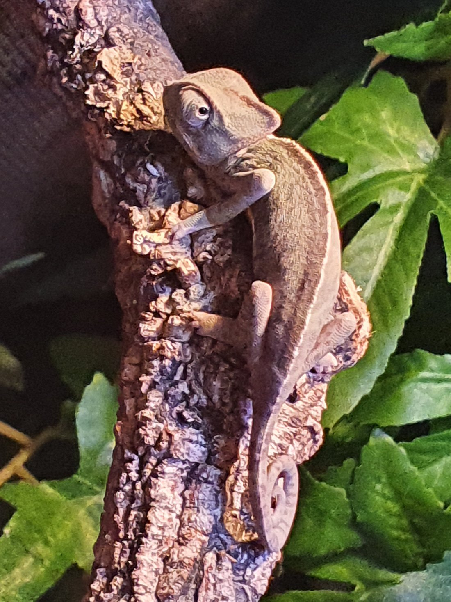
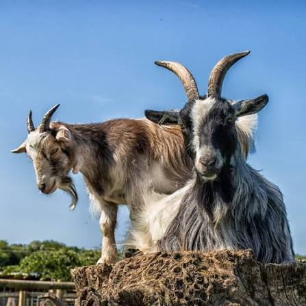

Come and meet the friendly animals in our small petting zoo. Visitors can see goats, sheep, pigs, rabbits, chickens and our gentle miniature ponies. There are opportunities to learn about how the animals are cared for, and supervised handling sessions may be available. Please remember to wash your hands after visiting the animal area.


